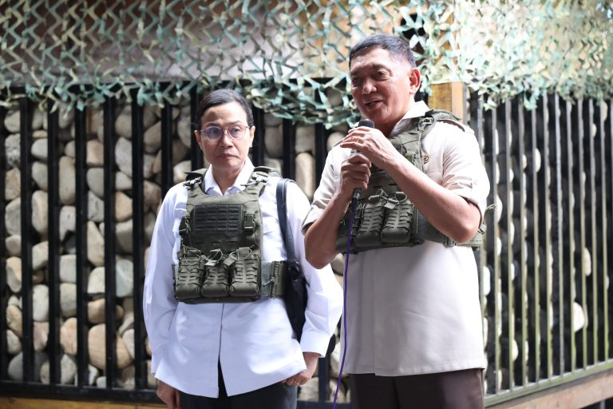

Pastikan Sinergisitas Pertahanan dan Keuangan Negara, Menhan-Menkeu Kunjungi Prajurit TNI di Garis Terdepan Papua


Papua — Menteri Pertahanan RI Sjafrie Sjamsoeddin bersama Menteri Keuangan RI Sri Mulyani Indrawati melakukan kunjungan kerja ke Papua, Sabtu (7/6/2025).
Fondasi Stabilitas Nasional: Sinergi Pertahanan dan Keuangan
Dalam kesempatan tersebut, Menhan dan Menkeu menekankan pentingnya sinergi antara pertahanan negara dan kekuatan keuangan negara dalam mendukung stabilitas nasional. Hal tersebut merefleksikan pandangan strategis pemerintah bahwa pertahanan negara harus selaras dengan keuangan negara karena keduanya saling beririsan. Pertahanan negara membutuhkan dukungan keuangan negara untuk mewujudkannya. Demikian pula sebaliknya, dengan pertahanan yang kuat akan mendukung perekonomian sehingga menguatkan keuangan negara.
Kunjungan ke Jantung Nduga
Menteri Pertahanan dan Menteri Keuangan beserta rombongan mengawali kegiatan dengan kedatangan di bandara Timika bersama rombongan dan melanjutkan penerbangan menuju bandara Kenyam. Setibanya di Kenyam, rombongan langsung menuju Pos Komando Taktis (Poskotis) Yonif 733/Masariku untuk meninjau secara langsung situasi dan kondisi di lapangan di wilayah tersebut. Kunjungan kali ini juga merupakan kunjungan yang pertama untuk Menteri Keuangan ke daerah rawan konflik di Nduga, Papua.
Sebelumnya, Menteri Pertahanan dan Menteri Keuangan menerima paparan mengenai wilayah operasi beserta perkembangan situasi terkini dari Panglima Komando Gabungan Wilayah Pertahanan III, Letnan Jenderal TNI Bambang Trisnohadi.
Memastikan Kesiapan Pasukan di Daerah Rawan
Usai menerima paparan situasi, untuk meyakinkan sinergisitas pertahanan negara dan keuangan negara, Menhan dan Menkeu mengunjungi pasukan TNI yang bertugas di garda terdepan di daerah rawan konflik Papua. Keduanya meninjau Poskotis Yonif 733/Masariku, yang merupakan salah satu wilayah rawan konflik di Papua, serta mengecek perlengkapan yang digunakan di daerah penugasan. Selama kegiatan kunjungan ke Kenyam, kedua Menteri bersama delegasi dari Kemhan dan Kemkeu mengenakan rompi anti peluru karena memang daerah tersebut termasuk daerah berisiko tinggi di Papua.
Simbol Komitmen Lintas Kementerian
Kunjungan langsung oleh kedua menteri ke garis depan Papua kali ini telah menunjukkan komitmen Kementerian Pertahanan dan Kementerian Keuangan untuk saling bersinergi menopang terwujudnya keamanan dan stabilitas nasional, meskipun berhadapan dengan sejumlah risiko di daerah rawan konflik.
Selanjutnya, keduanya berinteraksi dengan Forum Koordinasi Pimpinan Kabupaten (Forkopimkab) Nduga serta masyarakat setempat. Kegiatan dilanjutkan dengan peninjauan lapangan sebelum Menteri Pertahanan melanjutkan rangkaian kunjungan kerja menuju Merauke.
Melalui kunjungan ini, tercermin sinergi pertahanan negara dan keuangan negara dalam menjaga kedaulatan, sekaligus menjadi simbol kuatnya kerja sama lintas kementerian dalam memperkuat stabilitas nasional, khususnya di wilayah-wilayah dengan tantangan keamanan strategis seperti Papua. Turut hadir dalam kunjungan tersebut diantaranya Kasum TNI, Wakasad dan Kabaranahan Kemhan, serta pejabat setingkat Dirjen dan Staf Ahli di lingkungan Kemkeu. (Biro Infohan Setjen Kemhan)